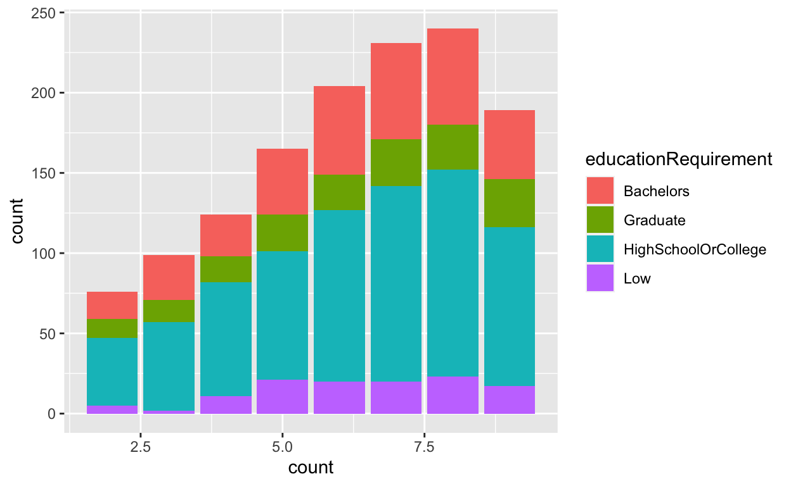

This is my Take-home Exercise on exploring the financial health of Ohio in USA, espically focusing on the prosperity of the businesses there. The data is from VAST Challenge 2022 and the topic is about the first point in challenge 3.
In this take-home exercise, we will explore and reveal the
demographics of Ohio in USA by creating data visualizations with
ggplot2 in R. The data is provided and can be downloaded
from VAST Challenge
2022. The data visualizations included in this exercise are:
packages = c('tidyverse', 'plotly', 'readxl', 'knitr', 'dplyr', 'ggplot2',
'grid', 'ggiraph', 'plotly', 'DT', 'patchwork', 'gganimate',
'tidyverse', 'readxl', 'gifski', 'gapminder', 'treemap',
'treemapify', 'rPackedBar', 'plyr')
for(p in packages){
if(!require(p, character.only = T)){
install.packages(p)
}
library(p, character.only = T)
}
Jobs <- read_csv("Datasets/Attributes/Jobs.csv")
Buildings <- read_csv("Datasets/Attributes/Buildings.csv")
Employers <- read_csv("Datasets/Attributes/Employers.csv")
Schools <- read_csv("Datasets/Attributes/Schools.csv")
Restaurants <- read_csv("Datasets/Attributes/Restaurants.csv")
Pubs <- read_csv("Datasets/Attributes/Pubs.csv")
Apartments <- read_csv("Datasets/Attributes/Apartments.csv")
# Step1: Create a new column called type to identify their industry
# Step2: Select the needed columns
Schools <- Schools %>%
add_column(type = "Education")
Schools_selected <- Schools %>%
select('buildingId', 'type')
Restaurants <- Restaurants %>%
add_column(type = "Restaurants")
Restaurants_selected <- Restaurants %>%
select('buildingId', 'type')
Pubs <- Pubs %>%
add_column(type = "Pubs")
Pubs_selected <- Pubs %>%
select('buildingId', 'type')
Apartments <- Apartments %>%
add_column(type = "Residential")
Apartments_selected <- Apartments %>%
select('buildingId', 'type')
# Combine each dataframe in one table called Type
Type <- rbind(Schools_selected, Restaurants_selected, Pubs_selected, Apartments_selected)
# Merge dataframes to get the final data and remove duplicate rows
Buildings_mutated <- Buildings %>%
left_join(Type, by = "buildingId") %>%
distinct()
Employers_mutated <- Employers %>%
left_join(Buildings_mutated, by = "buildingId") %>%
distinct()
right_table <- Employers_mutated %>%
select('employerId', 'buildingType', 'type')
final_data <- Jobs %>%
left_join(right_table, by = "employerId") %>%
distinct()
# add frequency column
final_data <- final_data %>%
group_by(employerId)%>%
dplyr::mutate(count=n())
saveRDS(final_data, file = "final_data.rds")
final_data <- readRDS(file = "final_data.rds")
graph1 <- ggplot(final_data, aes(x = count)) +
geom_dotplot_interactive(
aes(tooltip = employerId),
stackgroups = TRUE,
binwidth = 0.01,
method = "histodot") +
scale_y_continuous(NULL, breaks = NULL)
girafe(
ggobj = graph1,
width_svg = 10,
height_svg = 12*0.5
)
graph1_1 <- ggplot(data = final_data, aes(x = count, fill = educationRequirement)) +
geom_bar()
graph1_1
